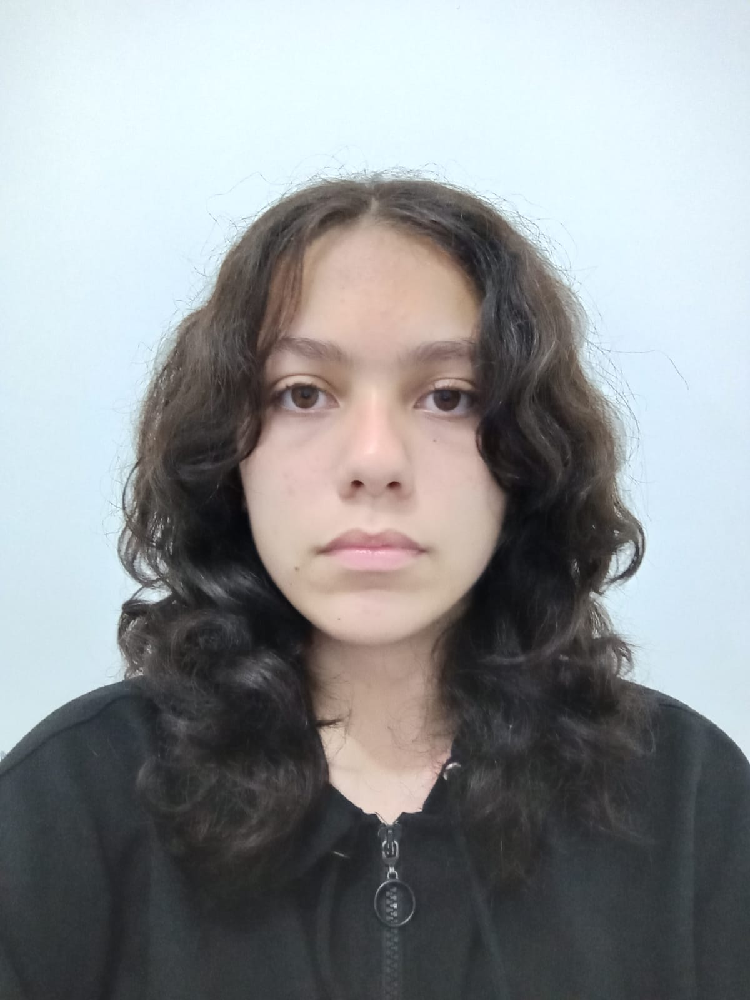

Eu sou Bruna Carolina Castro Costa
Estou no 1º Ano do Ensino Médio e curso Desenvolvimento de Sistemas

Nasci em 25 de Fevereiro de 2011
Eu gosto de muitas áreas da cultura pop/geek como: animes, filmes, RPGs, mangás, HQs e jogos.Meus animes favoritos são Cowboy Bebop e Cavaleiros do Zodíaco, o que reflete também minha apreciação por criações antigas.Pretendo criar um jogo, os chamados "jogos indie" que são produções independentes, inspirado em outros como: Sally face e Undertale e que envolvam suspense, no entanto, eu já dei um primeiro passo.
Gosto muito de livros com fantasia e ficção científica. Assim, pretendo expandir meu conhecimento sobre muitas outras áreas.